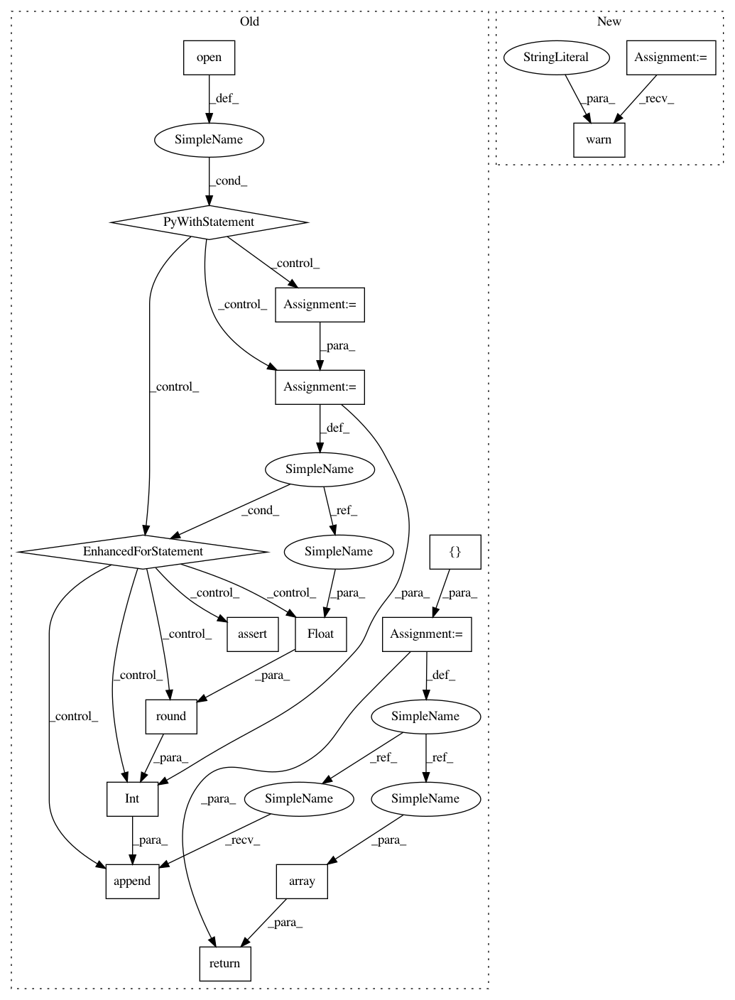

6b2a79fd202567f1869518efe8b4b68b9d3a3bbf,qiskit/aqua/translators/ising/exact_cover.py,,read_numbers_from_file,#Any#,99
Before Change
Returns:
numpy.ndarray: list of numbers as a numpy.ndarray.
numbers = []
with open(filename) as infile:
for line in infile:
assert(int(round(float(line))) == float(line))
numbers.append(int(round(float(line))))
return np.array(numbers)
def sample_most_likely(n, state_vector):
Compute the most likely binary string from state vector.
After Change
def read_numbers_from_file(filename):
from .common import read_numbers_from_file as redirect_func
warnings.warn("read_numbers_from_file function has been moved to "
"qiskit.aqua.translators.ising.common, "
"the method here will be removed after Aqua 0.7+",
DeprecationWarning)
return redirect_func(filename)
def sample_most_likely(n=None, state_vector=None):
In pattern: SUPERPATTERN
Frequency: 3
Non-data size: 16
Instances
Project Name: Qiskit/qiskit-aqua
Commit Name: 6b2a79fd202567f1869518efe8b4b68b9d3a3bbf
Time: 2019-08-26
Author: chenrich@us.ibm.com
File Name: qiskit/aqua/translators/ising/exact_cover.py
Class Name:
Method Name: read_numbers_from_file
Project Name: Qiskit/qiskit-aqua
Commit Name: 6b2a79fd202567f1869518efe8b4b68b9d3a3bbf
Time: 2019-08-26
Author: chenrich@us.ibm.com
File Name: qiskit/aqua/translators/ising/exact_cover.py
Class Name:
Method Name: read_numbers_from_file
Project Name: Qiskit/qiskit-aqua
Commit Name: 6b2a79fd202567f1869518efe8b4b68b9d3a3bbf
Time: 2019-08-26
Author: chenrich@us.ibm.com
File Name: qiskit/aqua/translators/ising/set_packing.py
Class Name:
Method Name: read_numbers_from_file
Project Name: Qiskit/qiskit-aqua
Commit Name: 6b2a79fd202567f1869518efe8b4b68b9d3a3bbf
Time: 2019-08-26
Author: chenrich@us.ibm.com
File Name: qiskit/aqua/translators/ising/partition.py
Class Name:
Method Name: read_numbers_from_file